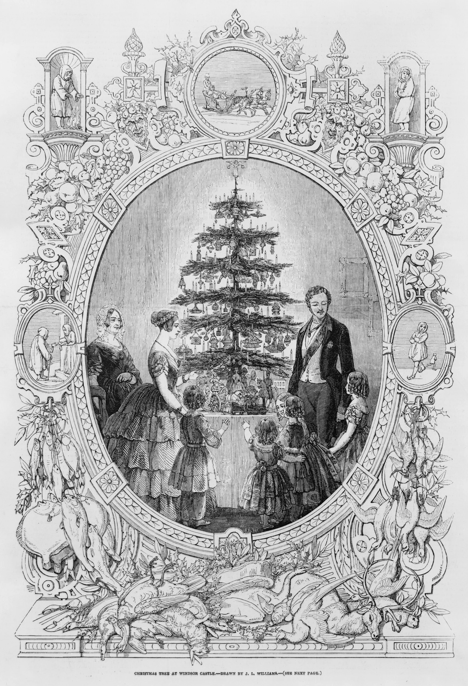
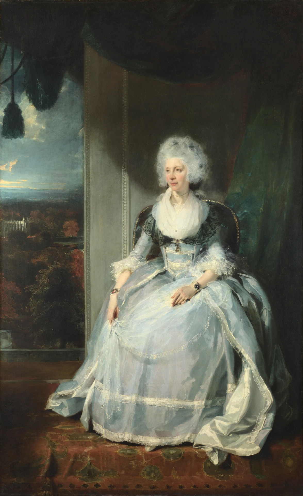
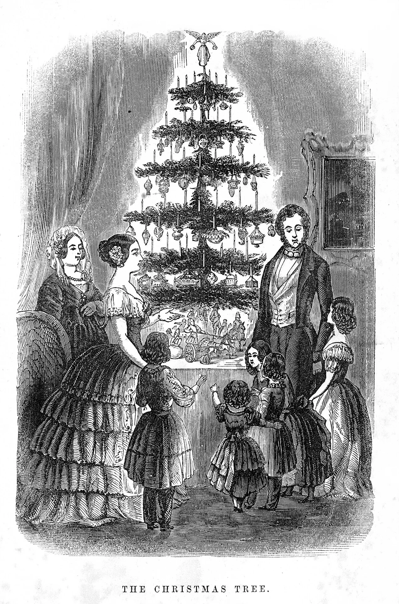

아직 펼치지 않은 카드성탄 풍습은 어떻게 시작됐을까 · 3윈저성의 성탄 트리신문 한 장에 실린 이 나무가 영국의 성탄을 바꿨어요. 어떻게 된 일일까요?커다란 나무에 촛불이 가득해! 누구네 집 나무일까?
1848년 성탄 무렵영국 · 윈저성
윈저성의 성탄 트리
1848년 성탄 무렵, 런던의 신문에 윈저성의 트리 그림과 기사가 실렸어요. 기사는 꼭대기의 천사부터 나무 아래 장난감까지 하나하나 적어 두었어요. 그림 속 작은 것들을 눌러, 그해 기사로 읽어 보세요.
영국 여왕님네 성탄 트리가 신문에 나왔대. 꼭대기 천사, 촛불, 장난감… 그림 속에 숨은 것들을 같이 찾아볼까?
검수 전 시안이에요(기준서 1판 보탬 11). 장면에는 그때의 기사·전기·일기와 왕실 소장품 기록에 있는 것만 옮겼고, 기록마다 다른 점은 따로 적었어요. 상상은 ‘눈 감고 상상해 보기’에만 썼어요.
시안 확인용카드 단계 미리 보기
1
1800년, 왕비의 주목 나무
1800년 성탄, 윈저의 ‘왕비의 별궁(퀸스 로지)’. 독일에서 시집온 샬럿 왕비가 저녁에 아이들을 불러 잔치를 열었어요. 방 한가운데 커다란 통에 주목 나무 한 그루가 서 있었어요.
왕비의 전기를 쓴 존 왓킨스(1819년)는, 가지마다 종이에 싼 사탕과 아몬드, 건포도, 과일과 장난감이 달려 있고 작은 밀랍 초들이 온 나무를 밝혔다고 적었어요. 아이들은 사탕과 장난감을 하나씩 받아 아주 기뻐하며 집으로 돌아갔어요.

서른두 해 뒤인 1832년 12월 24일, 열세 살 빅토리아 공주도 일기에 적었어요. “커다란 둥근 탁자 두 개 위에, 불빛과 설탕 장식을 단 나무 두 그루가 놓여 있었다.”(이 안내서가 옮김) 왕실의 트리는 앨버트 공이 오기 전부터 있었어요.
200년도 더 전에 영국 왕비님이 방 안에 나무를 세우고 사탕이랑 장난감을 매달았대. 아이들은 하나씩 받아서 신나게 집에 갔어!
물어보기나무에 사탕을 매단다면, 너는 무슨 사탕을 달고 싶어?
2
1848년, 신문 속 트리
1848년 성탄 무렵, 런던의 주간 신문 『일러스트레이티드 런던 뉴스』 성탄 특별호에 이 그림이 실렸어요. J. L. 윌리엄스가 그렸고, 다음 쪽에는 윈저성의 트리를 자세히 적은 기사가 있었어요.
기사에 따르면 이 나무는 해마다 왕실 아이들을 위해 마련하는 나무예요. 성탄 전야에 세워 ‘열두째 밤’(성탄부터 열두째 날 밤)까지 두었어요. 그림 속 작은 것들을 눌러, 1848년 기사로 읽어 보세요.
그림 속 숫자를 하나씩 눌러, 1848년 기사로 읽어 보세요.
「윈저성의 성탄 트리」, 『일러스트레이티드 런던 뉴스』 1848년 성탄 특별호 · 그림 J. L. 윌리엄스 · 퍼블릭 도메인 · 미국 의회도서관 · 위키미디어 공용
그림 위의 숫자나 아래 번호를 눌러 보세요.
다 찾았어요. 1848년 기사는 이 나무를 해마다 왕실 아이들을 위해 마련한다고 적었어요.
신문에 여왕님네 트리 그림이 실렸어. 그림 속 숫자를 하나씩 눌러 봐!
물어보기그림 속에서 초가 몇 개쯤 보여?
3
바다 건너 미국으로
두 해 뒤인 1850년 12월, 미국 필라델피아의 여성 잡지 『고디스 레이디스 북』이 이 그림을 다시 새겨 실었어요. 테두리는 떼어 내고, 그림 아래에는 ‘성탄 트리(THE CHRISTMAS TREE)’라는 제목만 붙였어요.
버지니아주 알렉산드리아시의 역사 자료는, 이 그림이 아주 미국적인 장면으로 다시 만들어져 미국에 트리가 퍼지는 데 큰 몫을 했다고 설명해요. 꼭대기의 천사와 층층의 초는 그대로예요.

바다 건너 미국 잡지에도 이 트리 그림이 실렸어. 꼭대기 천사도 그대로 있네!
물어보기앞의 그림과 견주어 보면, 사람들 모습에서 무엇이 달라졌을까?
4
1850년 성탄 전야
1850년 12월 24일 저녁, 여왕은 일기를 썼어요. 먼저 앨버트 공이 여왕을 ‘나의 나무와 탁자’로 데려갔는데, 선물이 셀 수 없이 많아 정말 너무 많고 너무 훌륭했다고 적었어요. 그다음은 아이들 차례였어요.
“일곱 아이가 저희 나무로 가서, 장난감과 다른 선물들을 보고 기뻐 뛰며 소리를 질렀다.”
빅토리아 여왕의 일기, 1850년 12월 24일 · 영국 왕실 소장품 재단 · 이 안내서가 옮김
사내아이들은 선물로 받은 칼 생각뿐이었고, 버티 왕자는 갑옷을 받고 무척 좋아하면서도 몸이 끼인다고 투덜댔어요. 여왕의 어머니도 같은 방에 자기 나무와 탁자가 있었어요.
여왕은 이날의 방들을 화가 제임스 로버츠에게 수채화로 그려 두게 했어요.
여왕님네 일곱 아이가 자기 트리로 달려가서, 장난감을 보고 폴짝폴짝 뛰며 소리를 질렀대!
물어보기트리 아래에서 선물을 처음 봤을 때, 너는 어떤 소리를 질렀어?
눈 감고 상상해 보기
1850년 성탄 전야, 윈저성. 문이 열리면 수많은 촛불이 한꺼번에 흔들리고, 밀랍 녹는 냄새와 생강과자 냄새가 섞여요. 종이 포장 바스락거리는 소리 위로 아이들의 웃음소리가 높아져요.
눈을 감아 봐. 촛불이 반짝반짝, 생강과자 냄새가 솔솔. 아이들이 와아 하고 달려가.
나의 자리
1848년, 신문 한 장이 윈저성의 트리를 많은 사람에게 보여 주었어요. 우리 집 성탄에도 누군가를 보고 따라 하게 된 풍습이 있나요?
사람들이 신문 그림을 보고 집에도 트리를 세웠대. 너는 누구를 보고 따라 해 본 성탄 놀이가 있어?
마음에 닿는 한 줄을 고르거나 직접 써 보세요. 한 줄을 남기면 이 자리의 도장이 찍혀요. 이 기기에만 저장돼요.
더 깊이
궁금한 칸만 펼쳐 읽어도 괜찮아요.
알고 보면
나무가 여러 그루 1848년 기사에 따르면 윈저성에는 아이들의 나무 말고도 여왕과 앨버트 공, 여왕의 어머니, 왕실 식구들의 나무가 따로 있었어요. 여왕의 나무는 앨버트 공이, 공의 나무는 여왕이 골랐어요.
선물 탁자 영국 왕실 소장품 재단은 여왕 부부와 아이들, 여왕의 어머니가 저마다 나무를 하나씩 가졌고, 포장하지 않은 선물을 탁자에 펼쳐 두는 ‘선물 탁자’도 이 부부가 시작했다고 설명해요.
그림으로 남긴 1850년 여왕은 화가 제임스 로버츠에게 성탄 방을 그리게 했어요. 세 점 값으로 22파운드를 치렀지만, 지금 왕실 소장품에 남은 것은 두 점이에요.
기록마다 다른 점
1800년 잔치의 아이들 왓킨스(1819년)는 그 동네 이름난 집안의 아이들을 불렀다고 적었고, 영국 왕실 소장품 재단 자료는 왕실에서 일하는 사람들의 아이들이었다고 적었어요.
첫 트리의 모습 영국 왕실 소장품 재단은 첫 성탄 트리가 초와 종이꽃, 사탕으로 꾸민 주목 가지였다고 하고, 왓킨스는 1800년 잔치에 주목 나무 한 그루를 통에 세웠다고 적었어요.
누가 들여왔나 흔히 앨버트 공이 트리를 들여왔다고 하지만, 1800년 샬럿 왕비의 잔치와 1832년 공주의 일기에 이미 트리가 있어요. 앨버트 공은 1840년에 여왕과 결혼했어요.
더 보기
그때의 기록을 직접 읽어 볼 수 있어요.
여섯 곳 다 찾기 금박
그림 속 여섯 곳을 모두 찾아 읽으면 카드에 금박이 입혀져요.
그림 속 여섯 곳을 모두 찾아 읽기
아이와 함께 채색
아이와 함께 ‘영화처럼 보기’를 끝까지 보면 카드가 채색돼요.
아이와 함께 ‘영화처럼 보기’를 끝까지 보기
근거 보기 (11)
- 『일러스트레이티드 런던 뉴스』 1848년 성탄 특별호 기사(빅토리아 시대 런던 자료 모음의 옮겨 적기) — 해마다 왕실 아이들을 위한 나무, 8피트 전나무·여섯 층·층마다 초 열두 개, 쟁반·바구니·봉봉 그릇, 과자·금박 생강과자·사탕 든 달걀과 리본, 흰 다마스크 탁자, 이름표 붙은 장난감·인형, 꼭대기 천사, 성탄 전야부터 열두째 밤까지, 다른 나무들, 과자 장인 모딧
- 세계사 백과(World History Encyclopedia) 「How Queen Victoria Celebrated Christmas」 — 1848년 기사의 원문 인용(나무·초·매단 것들·천사·성탄 전야부터 열두째 밤까지)
- 리젠시 히스토리 — 존 왓킨스 『샬럿 왕비 회고록』(1819) 인용(1800년 잔치, 통에 세운 주목 나무, 사탕·아몬드·건포도·과일·장난감·작은 밀랍 초, 아이마다 사탕과 장난감), 빅토리아 공주의 일기(1832년 12월 24일)
- 영국 왕실 소장품 재단 RCIN 919812 — 1850년 성탄 전야 여왕의 일기(앨버트 공이 나의 나무와 탁자로 데려감, 너무 많고 훌륭한 선물), 로버츠의 수채화
- 영국 왕실 소장품 재단 RCIN 919813 — 1850년 12월 24일 일기(일곱 아이, 칼, 버티 왕자의 갑옷, 어머니의 나무와 탁자), 로버츠에게 세 점 값 22파운드·남은 것은 두 점
- 영국 왕실 소장품 재단 「Christmas at Windsor Castle」 자료 — 퀸스 로지에서 왕실 하인들의 아이들을 위한 잔치, 첫 트리는 주목 가지, 저마다의 나무와 선물 탁자
- 버지니아주 알렉산드리아시 역사 자료 — 1850년 『고디스 레이디스 북』이 1848년 그림을 아주 미국적인 장면으로 다시 만들어 실었고, 미국에 트리가 퍼지는 데 큰 몫을 함
- 위키백과(영어) 「Godey’s Lady’s Book」 — 길잡이로만(필라델피아의 여성 잡지, 1850년 그림)
- 영국 왕실 누리집 「Prince Albert」 — 여왕과 앨버트 공의 결혼(1840년 2월 10일)
- 위키백과(영어) 「Charlotte of Mecklenburg-Strelitz」 — 길잡이로만(독일 북부 메클렌부르크슈트렐리츠 출신, 1800년 12월 퀸스 로지의 트리)
- 위키미디어 공용: 1848년 그림(미국 의회도서관 · 성탄 특별호 409쪽), 1850년 고디스 그림, 샬럿 왕비 초상 정보
그림·사진·소리 출처
‘처음 만나는 기독교 문화’의 깊은 카드예요. 카드 단계와 남긴 글은 이 기기에만 저장돼요.